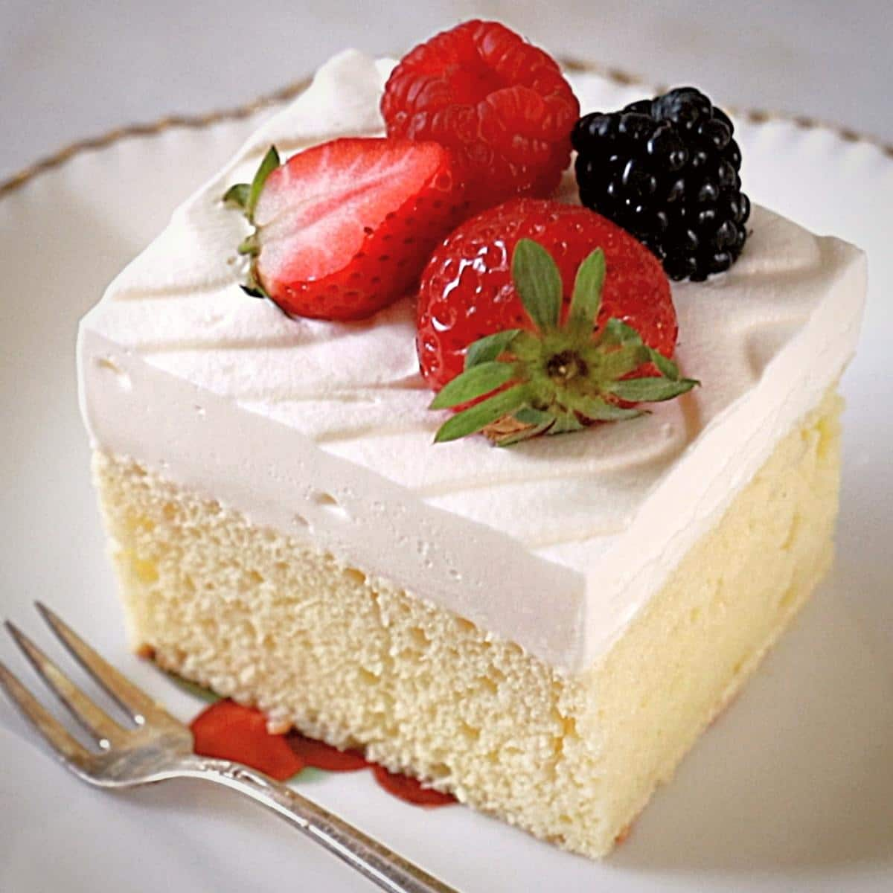

Bem vindo!! Aqui você vai saber oque vamos vender, e claro, quais os valores.
O que vamos vender??
Venderemos comidas tipicas da Venezuela, e claro, comidas e bebidas Brasileiras.
Vamos começar com as comidas da Venezuela. Por exemplo:
Arepa

A arepa é um prato de massa de pão feito com milho moído ou com farinha de milho
pré-cozido nas culinárias populares e tradicionais da Venezuela (onde é conhecido como tortilla e
changa). É um dos pratos tradicionais e emblemáticos da Venezuela
Também temos um bolo delicioso chamado "BOLO TRÊS LECHES".

- Uma das sobremesas mais tradicionais da América Latina, o bolo
tres
leches consiste de um bolo de massa esponjosa com uma calda de três tipos de leite
(evaporado, condensado e creme de leite), coberto com merengue ou chantilly e, às vezes,
polvilhado com canela em pó e decorado com cerejas marrasquino.
Agora as comidas Brasileiras!
Nós temos a famosa Esfiha fechada.
 A Esfiha fechada é feita normalmente com massa de pão, e
acompanhada por dentro com carne moída. Também pode colocar outros ingredientes, como
queijo, presunto etc...
A Esfiha fechada é feita normalmente com massa de pão, e
acompanhada por dentro com carne moída. Também pode colocar outros ingredientes, como
queijo, presunto etc...